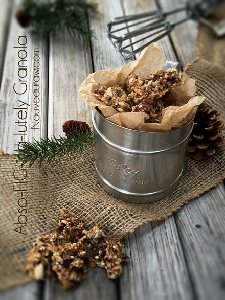
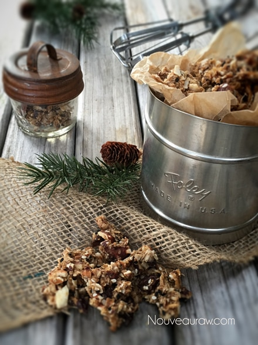
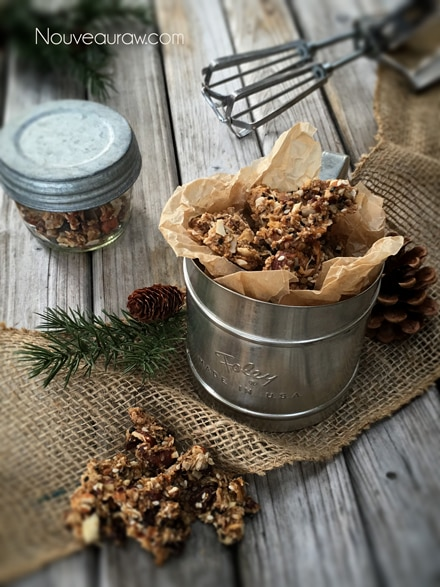

Abso-FIG-ing-lutely Granola

~ raw, vegan, gluten-free ~
I have been on a mission as of late, and that is to use up my black mission figs! Black Mission Figs have blackish-purple skin and pink colored flesh when fresh. They are available from May through December.
However beginning in November, night temperatures drop, and the fig is no longer at its best for culinary use. The interior of the fig becomes woody and dry, and the seeds begin to separate from the flesh.
This is when we turn to use dried figs! The matured Black Mission fig has a tough peel (in this case, green giving way to deep purple), often cracking near the stem end upon ripeness, and exposing the pulp beneath.
The soft, creamy pink interior contains a seed mass bound with jelly-like flesh. The edible seeds are numerous and generally hollow unless pollinated. Pollinated seeds provide the characteristic nutty taste of dried figs.
I didn’t get the end dry measurement of this granola because my dear husband got into the dehydrator before I was able to collect this information. He REALLY liked it according to the “holes” that I found on the trays. Then during my photo session, he was sneaking away large chunks. I roughly estimated that it made 12 cups of dried granola. haha
Munch away! Caveman style! And please keep in touch below by leaving comments. I always love to hear from those that visit my site. Blessings and joy, amie sue
 Ingredients:
Ingredients:
Yields roughly 12 cups dry granola
Dry Ingredients:
- 8 cups raw, gluten-free rolled oats, soaked
- 3 cups raw mixed nuts, rough chopped, soaked
- 1 cup shredded coconut
- 3/4 cup raw sunflower seeds (soaked 2 hours in water)
- 1/2 cup raw sesame seeds
- 1 cup raisins
- 2 cups chopped dried figs
- 1 cup chopped dried natural pineapple
Wet Ingredients:
- 1 1/4 cup raw honey or liquid sweetener
- 3/4 cup hot water
- 2 Tbsp vanilla extract
- 1/2 cup cold-pressed coconut oil, melted
- 3/4 cup Medjool dates, pitted
- 1 Tbsp ground Ceylon cinnamon
- 1 tsp ground nutmeg
- 1 tsp ground cloves
- 1/2 tsp Himalayan pink salt
Preparation:
- Regarding oats. The important step with oats is to soak them overnight to remove the phytic acid that impairs digestion. Please see the link above for this step. After the soaking process be sure to rinse them until the water runs clear. Squeeze out all the excess water.
- Drain and rinse the sunflower seeds, placing them in a large bowl.
- Combine the “dry ingredient”s in the large bowl and mix.
- Combine the “wet ingredients” in a food processor fitted with the “S” blade and mix well.
- You will notice that I called for hot water above in the “wet ingredient list.” I used hot water to help bring the honey and coconut oil together.
- If the figs and pineapple are really hard and dry, re-hydrate them in enough warm water to cover them. Soak for roughly 15 minutes to soften them. Drain the soak water when ready to use them.
- I find dried pineapple rings difficult to cut, so I use a kitchen scissor which makes things go lickity-split.
- Pour the wet mixture over the dry mixture, mixing until everything is well coated.
- Place the batter on the teflex sheets that come with the dehydrator.
- If you don’t have those you can use parchment paper, but don’t use wax paper because the granola will stick to it.
- You can either spread the batter out flat with an offset spatula, or you can drop it on the screen in chunks which allows it to dry in clusters. This is my favorite way since we tend to eat the granola more as a snack than as a cereal.
- Dehydrate at 145 degrees (F) for about 1 hour, reduce heat to 115 degrees (F) for about 4 hours and then flip the granola over onto the mesh screens that comes with the dehydrator, peeling off the non-stick sheet.
- Continue drying for about 16 hours or until desired dryness is reached. I tend to like my granola more on the chewy side than the crunchy side.
- Once done and cooled, store the granola in airtight containers. You can keep it on the countertop for walk-by munching, or it can be stored in the fridge or freezer to extend the shelf life. On the counter, it should be good for several weeks if it lasts that long!
 The Institute of Culinary Ingredients™
The Institute of Culinary Ingredients™
- To learn more about maple syrup by clicking (here).
- Raw honey isn’t vegan, but I still use it now and again. Read (here) why I like to.
- Dates are an amazing ingredient for raw food recipes, click (here) to read why.
- Why do I specify Ceylon cinnamon? Click (here) to learn why.
- What is Himalayan pink salt and does it really matter? Click (here) to read more about it.
- Are oats gluten-free? Yes, read more about that (here).
- Are oats raw? Yes, they can be found. Click (here) to learn more.
- Do I need to soak and dehydrate oats? Not required but recommended. Click (here) to see why.
Culinary Explanations:
- Why do I start the dehydrator at 145 degrees (F)? Click (here) to learn the reason behind this.
- When working with fresh ingredients it is important to taste test as you build a recipe. Learn why (here).
- Don’t own a dehydrator? Learn how to use your oven (here). I do however truly believe that it is a worthwhile investment. Click (here) to learn what I use.


© AmieSue.com